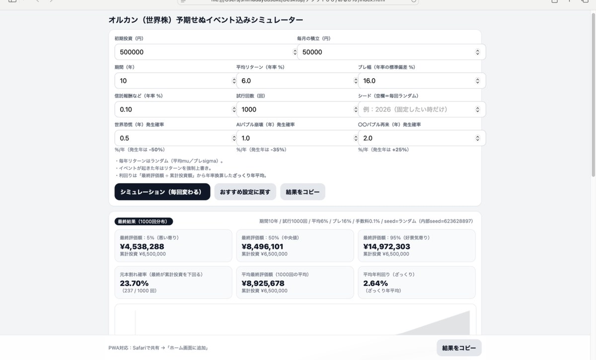

オルカン積立シミュレーション
投資積立額と期間から、将来イメージをざっくり作る。
固定費・投資・老後・住宅ローン・時間の価値。
迷う前に、まず数字で確認できるようにまとめました。
「小さく確実に積み上げる」ための設計にしています。
まずは触って判断できる。気になるテーマから気軽に。
入力→結果→改善提案まで、疲れない導線。
一目で結論、必要なら深掘りできる順番に。
人気の3本を“実際の画面”つきで紹介。まずはここから触ってみてください。
各カテゴリは「まず使ってほしい分だけ」を上に出して、残りは“もっと見る”にまとめています。
収入・支出・貯金の前提から、将来の見通しをざっくり可視化。
日々のムダがどこに潜むか、ざっくり洗い出し。
「次の給料日まで」を見える化して浪費ブレーキ。
固定費をチェックして、改善の優先順位を作る。
貯金と生活費から「あと何年もつか」を一発で算出。
家計の状態をざっくり判定して「どこから直すか」を掴む。
60秒でYes/No判断。楽しく浪費ブレーキを鍛える。
生涯コストや損益分岐点を整理して判断材料を作る。
「ちょい課金」が積み上がるとどうなるかを数字で確認。
毎日のちょい買いが、月/年でどれだけになるか見える化。
いまの習慣のままだと将来どうなりそうかをざっくり確認。
固定費の差が将来の資産差としてどれだけ広がるか可視化。
病気/失業/金利上昇などをON/OFFして詰み感を可視化。
浪費の原因タイプを整理して対策へ。
意志じゃなく仕組みで続けるためのクセを見つける。
「買う/買わない」をゲームで鍛える。家計の防衛訓練。
通勤・残業・スマホ時間が「いくら分」かを一発で見える化。
使える時間から、現実的な副業の進め方を組み立て。
生活スタイルから、相性のいい副業タイプを提案。
「あと何日/何回」を数字で出して行動スイッチ。
何もしなかった時間が人生全体でどれだけ消えるか見える化。
いまの習慣のままだと将来どうなりそうかをざっくり確認。
アプリで気づいた“次の一手”を記事で深掘りできます。
このサイト（アプリ集）を作っている「ゆーすけ」について。
当サイトにはアフィリエイトリンク（広告）が含まれる場合があります。
相談・コラボ・要望などは、まずnoteからどうぞ。
相談・コラボ・要望などは、noteから連絡ください。